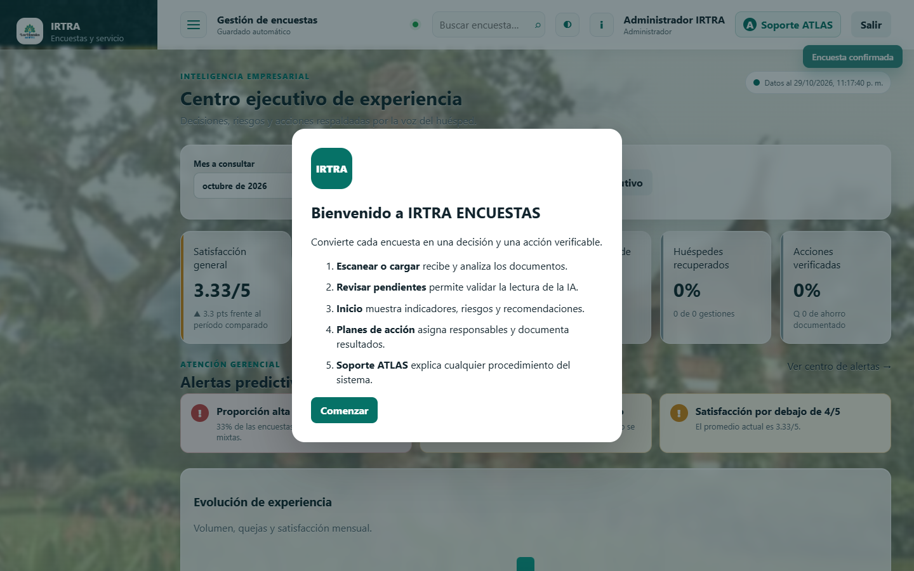
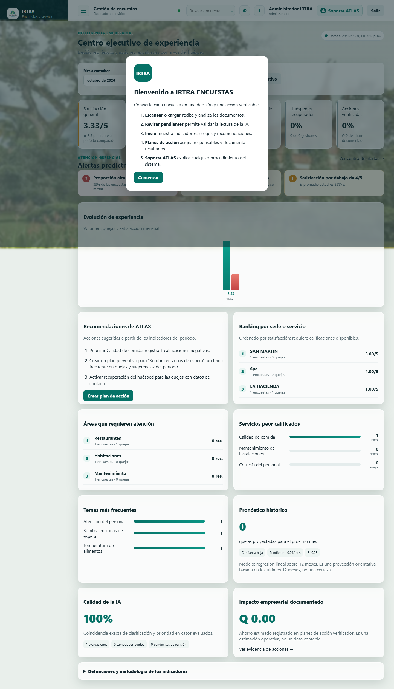

Caché (cache-aside con invalidación) y Tiempo real (Server-Sent Events) integrados al sistema de recepción, análisis y seguimiento de encuestas de calidad.
Qué resuelve el sistema. IRTRA Calidad IA recibe boletas de encuestas (escaneadas o cargadas), valida y analiza su contenido, prioriza quejas y sugerencias, asigna responsables con SLA, documenta la recuperación del huésped y genera el informe gerencial en Excel conservando macros. Sus usuarios principales son verificadores (operan dentro del alcance de sus áreas) y administradores.
Estado y alcance funcional. El sistema ya contaba con ingesta segura, análisis, revisión humana, exportación .xlsm, MFA, roles, auditoría inmutable y un tablero ejecutivo con indicadores, alertas y pronóstico.
Necesidades detectadas (motivan los aportes).
Requerimientos de los aportes. (R1) servir el tablero desde una caché con expiración e invalidación coherente tras cada escritura; (R2) propagar en tiempo real los cambios a las vistas abiertas respetando el alcance y los permisos; (R3) no degradar la seguridad ni la fidelidad de datos existentes; (R4) ser verificables y demostrables.
Atributos de calidad. rendimiento, coherencia, disponibilidad (tolerancia a fallos del backend de caché), seguridad (sin fuga de datos fuera de alcance) y mantenibilidad.
| Criterio | Aporte 1 — Caché | Aporte 2 — Tiempo real (SSE) |
|---|---|---|
| Necesidad / riesgo | Carga repetida de 13 agregaciones pesadas en el camino más consultado. | Los cambios no se veían sin recargar manualmente. |
| Cómo se atendía antes | Cada visita recalculaba todo en la base de datos. | El usuario recargaba la página a mano. |
| Alternativas consideradas | (a) Vistas materializadas en PostgreSQL; (b) memoización por request; (c) cache-aside en la app. | (a) Polling periódico; (b) WebSockets; (c) SSE. |
| Por qué esta solución | Cache-aside no cambia el esquema, controla TTL e invalidación desde el dominio y permite backend local o Redis. Las vistas materializadas no invalidan al instante y añaden complejidad de esquema. | SSE es unidireccional (servidor→cliente), nativo del navegador (EventSource con reconexión), simple sobre HTTP/HTTPS existente y suficiente para notificar; WebSockets añade complejidad bidireccional innecesaria y el polling desperdicia consultas. |
| Componente beneficiado | Tablero ejecutivo (inicio, alertas, reportes, ATLAS, programador). | Todas las vistas autenticadas (aviso + refresco). |
| Costos / limitaciones | Datos con hasta TTL de antigüedad entre escrituras; memoria acotada (LRU); coherencia depende de invalidar en cada escritura. | Una conexión por pestaña; tope de clientes; es notificación (no entrega de datos sensibles). |
Creatividad / valor. Reducción medible de latencia (~13×), menos carga en la base de datos y mejor experiencia (información viva sin recargar). Los dos aportes se refuerzan: la escritura invalida la caché y publica el evento, de modo que el refresco en vivo muestra siempre el dato correcto y recién recalculado.
cache.wrap(ns, clave, productor, ttl): consulta la caché; ante miss ejecuta el productor (las 13 consultas) y guarda el resultado.invalidateExecutive(), que incrementa la versión del namespace; las claves previas dejan de coincidir al instante (coherencia inmediata).MemoryStore, LRU + TTL); Redis opcional (CACHE_BACKEND=redis) con la misma interfaz para escalado horizontal.globalThis para que, en el empaquetado por rutas de Next, exista una única caché de proceso (la invalidación de las rutas afecta a la caché que leen las páginas).wrap cae al productor (no rompe la petición); desalojo LRU acotado; CACHE_ENABLED=false lo desactiva.lib/cache.js, lib/cache-redis.js, lib/executive.js, lib/live.js, app/api/cache/stats/route.js.lib/events.js): publicación/suscripción en proceso con ids monótonos y cupo de clientes; singleton en globalThis.app/api/stream/route.js): respuesta text/event-stream autenticada, heartbeat cada 15 s, limpieza al desconectar y tope SSE_MAX_CLIENTS (responde 503).components/LiveUpdates.js): EventSource que muestra un aviso y ejecuta router.refresh() (con debounce).lib/ingest.js y rutas de escritura (validation, reanalyze, recovery, surveys/[id], actions).EventSource reconecta solo (retry: 5000); heartbeat; tope de conexiones; limpieza de la suscripción al abortar.npm run qa:setup # base de pruebas local aislada (una vez) npm run qa:test # unitarias + integración (incluye cache/events/executive-cache) node --env-file=.env.qa.local scripts/cache-benchmark.mjs # rendimiento de caché npm run qa:build && npm run qa:serve # app en https://localhost:3444 npm run qa:playwright # E2E de ambos aportes (e2e/aportes.spec.mjs)
| Nivel | Archivo | Qué verifica | Resultado |
|---|---|---|---|
| Unitaria | tests/cache.test.mjs (9) | hit/miss, expiración, invalidación, coherencia, LRU, aislamiento, tolerancia a fallos, interruptor, métricas. | ✔ pasa |
| Unitaria | tests/events.test.mjs (7) | entrega, ids monótonos, unsubscribe, formato SSE, sin fuga de datos, cupo de clientes. | ✔ pasa |
| Integración | tests/executive-cache.test.mjs (2) | el tablero usa cache-aside (hit en 2ª carga) e invalidar fuerza recalcular. | ✔ pasa |
| E2E | e2e/aportes.spec.mjs (1) | sobre la app real: caché con hits, confirmación propagada en vivo por SSE + aviso, e invalidación coherente. | ✔ pasa |
Suite completa contra PostgreSQL: 93/93 pruebas en verde.
Fuente: auditoria/evidencias/CACHE_BENCHMARK.json (25 cargas por escenario). La mejora relativa crece con el volumen real de datos.


CACHE_BACKEND=redis (invalidación por INCR atómico ya soportada).CACHE_TTL_MS de antigüedad (por defecto 60 s).SSE_MAX_CLIENTS protege el proceso pero conviene dimensionarlo según despliegue.Repositorio: https://github.com/javier2002guerra-lab/Seminario-IRTRA (versión entregada: etiqueta seminario-v1). CI: https://github.com/javier2002guerra-lab/Seminario-IRTRA/actions (.github/workflows/ci.yml).
lib/cache.js, lib/cache-redis.js, lib/events.js, lib/live.js, app/api/stream/route.js, app/api/cache/stats/route.js, components/LiveUpdates.js, integración en lib/executive.js, lib/ingest.js y rutas de escritura.tests/cache.test.mjs, tests/events.test.mjs, tests/executive-cache.test.mjs, e2e/aportes.spec.mjs.auditoria/evidencias/CACHE_BENCHMARK.json y capturas en docs/informe/img/.docs/diagramas/*.mmd.Javier Guerra — autoría integral de los aportes de Seminario: análisis del problema, diseño (diagramas de arquitectura, datos y secuencia), implementación del Aporte 1 (caché cache-aside con TTL, LRU, invalidación por versión y backend Redis opcional) y del Aporte 2 (bus de eventos, endpoint SSE y cliente en vivo), integración con las rutas de escritura, pruebas unitarias, de integración y E2E, benchmark de rendimiento, flujo de CI y documentación. El proyecto base IRTRA Calidad IA sobre el que se integran los aportes se desarrolló previamente como Proyecto de Graduación.